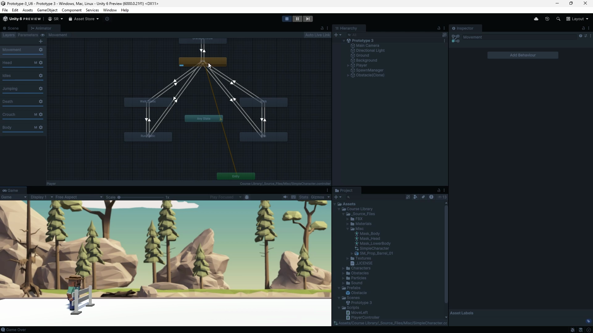
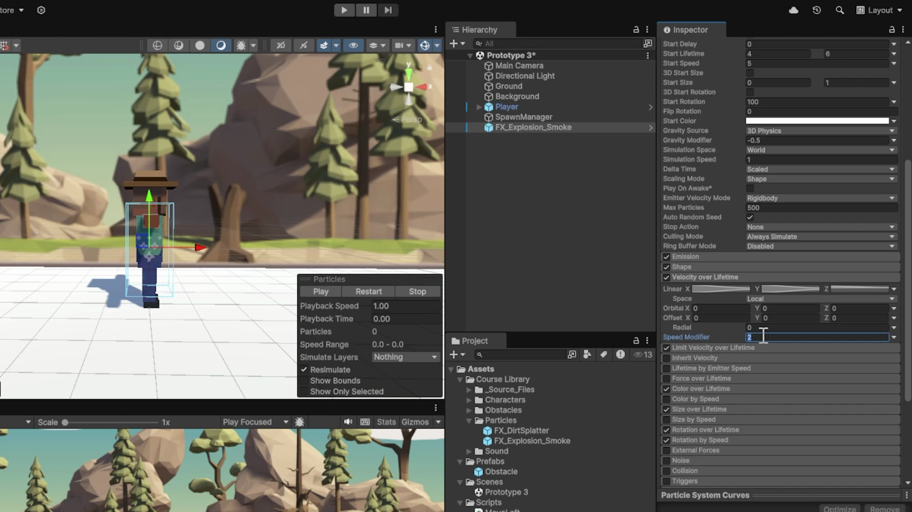

Watch the finished scene
Watch Unity’s official introduction with sound. Look for the repeating scenery, running and jumping animation, dust, and crash feedback. You will build these behaviors in the steps below.
How was this made?
Watch again if you like, and make a guess. You do not need to know any Unity terms yet.
- The character looks like it is running, but stays in the same place. What is actually moving?
- The character can jump over obstacles. What rule should stop a second press from launching another jump while it is already in the air?
- One collision changes the character’s pose, creates a burst, and plays a crash sound. How could one event coordinate all three?
- After the crash, the obstacles stop while the music keeps playing. How could we stop the gameplay without stopping everything?
Keep your guesses in mind. Each practical section will let you build one part of the answer and test it in Play mode.
From contact to coordinated feedback
In this lab, you will build a small runner scene: the character runs in place, jumps over approaching obstacles, and reacts when a collision ends the game. Each action needs movement, a matching body animation, and suitable visual and sound effects. You will connect these parts one at a time.
Connection to earlier work: Unity Basic Gameplay used contact between objects to change the scene. Here, contact will also tell the character when it has landed or crashed. The overview below introduces the ideas; the explanations after each practical step teach how the settings and code produce them.
Optional Unity Learn video references follow the matching steps and precede their explanation. Click a thumbnail to expand its player. In Pro mode, use “Full explanation” to reveal them with the detailed instructions. English captions are available where supplied. Some source demonstrations use different scripts or earlier settings; follow this lecture’s instructions for the final lab. Watching every video is not required for the 90-minute coding class.
Learning outcomes
By the end of this lecture, you will be able to:
- Explain how impulse and mass affect a jump, and gate jumping with ground contact.
- Trace a gameplay event through an Animator parameter and transition.
- Control continuous particles and one-time sounds from accepted events.
- Keep input, obstacle motion, spawning, and feedback consistent after a crash.
On the floor
Running animation
Dust near the feet
Press Space on the floor
Upward push and jump pose
Jump sound; dust stops
Hit an obstacle
Death animation and crash effects
Jumping and obstacles stop
New conceptImpulse and grounded contact
A physical jump begins with a brief upward push, called an impulse. When you press Space while the character is on the floor, that push sends it upward, and gravity brings it back down. The game also needs to know whether the character is touching the floor; we call this being grounded. Pressing Space again in the air will not start another jump. Once the character lands, it is grounded again and can jump once more.
New conceptAnimator parameters and transitions
An animation changes the character’s pose over time. For example, repeating leg movements make our stationary character look as though it is running. Unity’s Animator controls which animation is playing. When a jump begins, the game’s code sends a request through a parameter, a named value or signal used by the Animator. A transition defines when the Animator switches from one animation to another, so the character can change from running to a jump pose. Hitting an obstacle will cause another change, this time to a death animation.
New conceptContinuous effects and event playback
Visual and sound effects help the player notice what happened. A particle system creates many small moving images: in our scene, dust appears near the feet while the character runs on the ground. At takeoff, new dust stops appearing and a short jump sound plays. That recording is an audio clip, and the component that plays it is an Audio Source. A crash will produce a burst of particles and a crash sound. Running dust continues while an activity lasts, whereas the jump sound and crash burst each mark a single event.
New conceptOne game-over state for several components
A state records the game’s current situation. After a crash, the game needs to remember that the run has ended, so further Space presses no longer make the player jump. The moving obstacles need the same information so they stop, and the object that creates new obstacles needs it so no more appear. You will give these parts one shared game-over decision. The death animation, particle burst, and crash sound can then finish playing while the gameplay remains stopped.
Prepare the Prototype 3 test scene
Complete before class. Create a fresh Unity 6.3 Universal 3D project and prepare the assets and starter templates. Allow 25–35 minutes plus downloads. This checkpoint ends with a player that lands; you will write its jump in Section 02.
Import the assets and the starter templates.
- Download Prototype 3 starter package. The link targets the verified
.unitypackagefile; do not unzip it. - In Unity Editor choose Assets → Import Package → Custom Package…, select the package, and import all its contents.
- Open Assets/Scenes/Prototype 3.unity. Use File → Save As… to save Assets/Scenes/Sound and Effects.unity.
- In Window → Package Management → Package Manager, verify that Input System is installed. If missing, install it from Unity Registry.
- Set Edit → Project Settings → Player → Other Settings → Configuration → Active Input Handling to Input System Package (New). Use Both only if you also need older scripts that use the legacy Input API. Save and allow any requested restart.
- Under Project Settings → Input System Package → Settings, use Update Mode → Process Events In Dynamic Update.
- Download the three starter templates, extract outside the project, and copy the
.csfiles intoAssets/Scripts. These provide input setup, component references, obstacle movement, and spawning. You will write jumping, game over, animation, particles, and sound during the lesson. Keep one copy of each class; disable any older player-control script. Do not import the final references alongside these files.
Explanation
The starter RunnerController creates a Space-key Input Action, enables it while the component is active, and caches the Rigidbody, Animator, and Audio Source in Awake. Its behavior methods are empty: Space will not make the player jump yet. RunnerObstacle and RunnerSpawner supply movement and scheduled creation from earlier lessons; you will add their game-over checks in step 2.3.
Keep extending these three starter files. In step 2.4, create RunnerBackground.cs as a fourth script. Add fields inside the class, outside its methods. Replace an empty method when instructed; never create a second method with the same name. Save and wait for compilation after each numbered action group.
Prepare a physical player that can land on the floor.
- Select Ground. Set Transform position (0, 0, 0), rotation (0, 0, 0), scale (10, 1, 1). In its existing Box Collider set Center (0, -0.1, 0) and Size (10, 0.2, 10); leave Is Trigger off.
- Create the tags Ground and Obstacle through Tag → Add Tag…. Return to Ground and assign its Ground tag.
- Drag Assets/Course Library/Characters/Town/SimplePeople_Man_RoadWorker_White.prefab into the Hierarchy. Rename its root Player and use Prefab → Unpack Completely on that instance.
- Set Player position (0, 0.05, 0), rotation (0, 90, 0), scale (1, 1, 1).
- Attach the RunnerController script to the Player root. It requires a Rigidbody, Animator, and Audio Source; keep the existing Animator.
- Add one Box Collider on Player root: Center (0, 0.9, 0), Size (0.7, 1.8, 0.7), Is Trigger off. Keep a single collider for this lab.
- On Player Rigidbody set Mass 1, Use Gravity on, Is Kinematic off, Linear Damping 0, Interpolate Interpolate, Collision Detection Continuous Dynamic. Freeze Position X and Z and all Rotation axes; leave Position Y free.
- On Animator turn Apply Root Motion off. Leave the empty starter behavior methods unchanged until Section 02. The starter already binds Space; do not add another binding.
Explanation
The solid floor supports the player’s dynamic Rigidbody. Gravity pulls the player down, while the constraints keep it from drifting horizontally. Position Y remains free for the jump you will write later. Disabling root motion leaves physics in charge of the character’s position. Assign the Ground tag explicitly: the object name alone does not set its tag.
Prepare the obstacle and spawning support.
- Create 3D Object → Cube, name it Obstacle, and set Scale (1, 1, 1). Keep its Box Collider solid, with Is Trigger off.
- Assign its root the Obstacle tag. Attach the RunnerObstacle script to the same root.
- On the added Rigidbody turn Use Gravity off and Is Kinematic on. Set Collision Detection to Continuous Speculative. Leave Speed at 6.
- Create Assets/Prefabs and drag the configured cube into it. Delete the scene instance.
- Create an empty root named SpawnManager at (18, 0.5, 0). Attach the RunnerSpawner script.
- Drag Player from the Hierarchy into its Runner field. Drag the Obstacle prefab from the Project window into Obstacle Prefab. Leave Interval at 3 and disable this script component for the first jump test.
- Leave the starter Main Camera at (8, 4, -15), rotation (0, 0, 0), Field of View 40. In the Game tab, open the aspect-ratio dropdown (often labeled Free Aspect) and choose 16:9. If it is missing, use + to add an Aspect Ratio with Width 16 and Height 9, then select it. Keep Background stationary until you write its scrolling behavior in step 2.4.
Explanation
The starter obstacle script already moves its Rigidbody left and removes it beyond the play area. The spawner already creates the prefab on a schedule and passes it a reference to Player. These references are ready for your shared game-over rule in step 2.3, but the templates do not stop on collision yet. Keep the spawner disabled while building the jump.
Verify the starter scene before writing behavior.
- On Player Audio Source disable Play On Awake and Loop, set Spatial Blend 0 and Volume 0.7. Leave the audio assignment field empty; event clips will be passed by code.
- Enter Play mode with RunnerSpawner disabled. Confirm that Player settles on Ground.
- Confirm there is no horizontal drift and no red Console error. Pressing Space does nothing at this checkpoint because you have not written the jump code.
- Stop Play mode and save the scene. If Player falls through, inspect the two solid colliders and dynamic Rigidbody before class. The Ground tag will be needed for the jump code; it does not make the floor solid.
Explanation
This checkpoint verifies imported assets, components, and solid contact. The starter methods contain no gameplay behavior, so a missing jump or effect is expected. Resolve a fall-through or compilation error now; otherwise a later code test would mix a setup fault with the new behavior.
This baseline test is specific to our lab; there is no separate Unity Learn video for this exact checkpoint.
Control a jump with impulse and contact
Build on your starter RunnerController. Write ground detection and a queued jump, compare masses, add the shared game-over rule, and create the repeating background. Save and test after each action group.
Write ground detection and one accepted jump.
- In
RunnerController.cs, add these fields inside the class, aboveAwake.RunnerController.cs · add fields [SerializeField] private float jumpImpulse = 7f; private bool grounded; private bool jumpQueued; - Replace the empty
OnCollisionEntermethod with this ground-contact test. Confirm the floor has theGroundtag and a solid collider.RunnerController.cs · replace OnCollisionEnter private void OnCollisionEnter(Collision collision) { if (collision.gameObject.CompareTag("Ground")) { foreach (ContactPoint contact in collision.contacts) { if (contact.normal.y > 0.5f) { grounded = true; break; } } } } - Replace the empty
Updatemethod. Accept a fresh Space press only while grounded.RunnerController.cs · replace Update private void Update() { if (jumpAction.WasPressedThisFrame() && grounded) { grounded = false; jumpQueued = true; } } - Replace the empty
FixedUpdatemethod. It consumes the request once and applies the jump impulse.RunnerController.cs · replace FixedUpdate private void FixedUpdate() { if (!jumpQueued) return; jumpQueued = false; body.AddForce(Vector3.up * jumpImpulse, ForceMode.Impulse); } - Save and wait for compilation. With spawning disabled, enter Play mode, let Player land, focus Game view, and press Space. Try another press in the air, then try holding Space after landing. Expect one arc per accepted press. Stop Play mode.
Explanation
grounded starts false. Unity calls OnCollisionEnter when solid colliders begin touching; the tag selects the floor and contact.normal.y > 0.5f checks that the contact supports Player from below. That contact sets grounded true. A wall-like contact does not permit a jump.
Unity repeatedly draws pictures of the game, called frames. It calls Update once per frame, so this method checks whether Space was pressed as the game runs. WasPressedThisFrame() detects a new press, so holding Space does not repeatedly trigger it. The && requires both the press and ground contact. Clearing grounded immediately prevents another accepted press; setting jumpQueued remembers this one.
Unity calculates physics in fixed time steps, separately from drawing frames. It calls FixedUpdate for each physics step; there can be zero, one, or several such steps between drawn frames. The queue carries a press detected in Update to the next physics step, where the force is applied. Its early return skips work when no jump is pending. It clears the queue before applying AddForce, so each request produces one upward impulse. Vector3.up is the direction and jumpImpulse is the amount. Do not multiply a one-time impulse by Time.deltaTime; this value already describes the whole push. Multiplying it by the duration of a frame would shrink that push and make its size depend on timing. Continuous movement is different: in step 2.4 you will multiply a speed by elapsed time to get the distance moved.
Predict and compare two masses.
- With Mass 1 and Jump Impulse 7, run one jump and note its approximate peak height.
- Stop Play mode, change only Rigidbody Mass to 2, and predict the next jump before running it.
- Observe the lower jump. Restore Mass 1 outside Play mode and save.
- Read the Ground branch of
OnCollisionEnter. Confirm that only a Ground-tagged contact with an upward normal restoresgrounded.
Explanation
Impulse is divided by mass to find the velocity change: change in velocity = impulse / mass. With impulse 7, mass 1 gains 7 units/s upward; mass 2 gains 3.5 units/s. Gravity then reduces the upward velocity until the character starts falling.
Unity calls OnCollisionEnter when solid colliders begin touching. The script first checks the object’s tag, then examines the direction of its contact surface. A floor contact points mostly upward, so it can restore grounded. Finishing a jump animation cannot establish physical contact with the floor.
The same impulse gives half the velocity change at double the mass. With default gravity and negligible damping, the height gained is approximately proportional to the square of launch velocity: the heavier case reaches about one quarter of the height. A contact normal points out from the supporting surface; normal.y > 0.5f rejects a wall-like side contact. This lab assumes one flat floor and no moving platforms.
Refresher (1)Impulse and grounded contact
A jump needs an upward change in velocity while gravity continues pulling downward. Rigidbody.AddForce with ForceMode.Impulse applies that change once; it is not a position assignment. With impulse J and mass m, the velocity change is J / m. Do not multiply this one-time impulse by deltaTime.
The grounded flag records whether a supporting ground contact permits a jump. Accepting a press clears it immediately; a later solid-contact callback, OnCollisionEnter, restores it. An animation finishing is not evidence of landing.
Examples
- Mass 1: impulse
7changes vertical velocity by7units/s. - Mass 2: the same impulse changes velocity by
3.5units/s. - Airborne press: with
grounded == false, another press adds no impulse.
Write a shared game-over state and stop gameplay.
- Add this property alongside the fields in
RunnerController. Other scripts can read it; only this controller can change it.RunnerController.cs · add property public bool GameOver { get; private set; } - At the beginning of
OnCollisionEnter, before the existing Ground test, insert this block. Keep the Ground branch below it.RunnerController.cs · insert before the Ground branch if (GameOver) return; if (collision.gameObject.CompareTag("Obstacle")) { GameOver = true; jumpQueued = false; Debug.Log("Game over: feedback fired once."); return; } - Replace the
ifcondition inUpdatewith the first line below. Replace the early-return line inFixedUpdatewith the second. Keep both methods’ remaining statements.RunnerController.cs · replace the two conditions // Update if (jumpAction.WasPressedThisFrame() && grounded && !GameOver) // FixedUpdate if (!jumpQueued || GameOver) return; - In
RunnerObstacle.FixedUpdate, replace its early-return line with this one. Keep movement and cleanup below it.RunnerObstacle.cs · replace guard if (runner == null || runner.GameOver) return; - In
RunnerSpawner.Spawn, replace its early-return line. Keep instantiation and initialization below it.RunnerSpawner.cs · replace guard if (runner == null || obstaclePrefab == null || runner.GameOver) return; - Save all three files and wait for compilation. Enable spawning, enter Play mode, and let an Obstacle-tagged object hit Player. Expect one game-over message, no further jumps, stopped obstacles, and no new clones for at least six seconds. Stop Play mode and disable spawning again.
Explanation
GameOver initially reads false. The first Obstacle contact sets it true and clears any queued jump. The Console message is only a checkpoint here; animation, particles, and sound will be added later. The top if (GameOver) return; makes later collisions stop before they can change state. The obstacle branch also returns so it cannot fall through to the ground-contact test.
The new input condition rejects dead-player input; the physics guard rejects a queued jump after a crash. The obstacle and spawner each read the same player’s property, then return before their normal work. || means “or”: a missing reference or an ended run is enough to skip work. You have now added the shared rule to the movement and spawning support supplied in the starter.
Write a background that repeats and stops on game over.
- Outside Play mode, create an empty root BackgroundLoop at position
(0, 0, 0), rotation(0, 0, 0), scale(1, 1, 1). Parent the existing Background under it, preserving its world position. Keep its visible panel aligned with world X. Disable any colliders on this decorative background and remove any other script that moves it. Keep Ground separate and stationary. - Create
RunnerBackground.csin Assets/Scripts and attach it to BackgroundLoop. Keepusing UnityEngine;and the class declaration; replace the generated empty methods in the following steps. Add these fields inside the class.RunnerBackground.cs · add fields [SerializeField] private RunnerController runner; [SerializeField] private Renderer backgroundTile; [SerializeField] private float speed = 6f; private Vector3 startPosition; private float repeatWidth; private float distance; - Replace the empty
Startmethod. The Background Tile field will reference the existing panel’s Renderer, not BackgroundLoop.RunnerBackground.cs · replace Start private void Start() { startPosition = transform.position; repeatWidth = backgroundTile.bounds.size.x; GameObject nextTile = Instantiate(backgroundTile.gameObject, transform); nextTile.transform.position = backgroundTile.transform.position + Vector3.right * repeatWidth; } - Replace the empty
Updatemethod with continuous leftward motion and wrapping.RunnerBackground.cs · replace Update private void Update() { if (runner == null || runner.GameOver || repeatWidth <= 0f) return; distance = Mathf.Repeat(distance + speed * Time.deltaTime, repeatWidth); transform.position = startPosition + Vector3.left * distance; } - Save and compile. Before entering Play mode, assign Player’s RunnerController to Runner and the original Background’s Renderer to Background Tile; Start needs that Renderer to measure the panel width. Use a single visible panel that covers the camera horizontally. Enter Play mode with spawning disabled and watch at least two complete repeats. If a join is visible, check that the panel’s left and right artwork edges match, its bounds cover only the panel, and it is wide enough for the camera. Do not leave an extra manually duplicated panel: Start creates the second one.
- Stop, enable spawning, and test a crash. The background and obstacles must stop together. Animation, particles, and sound will be added in the next sections. Stop Play mode and disable spawning again for the animation setup. Save; the next Play session creates a fresh second panel automatically.
Explanation
backgroundTile.bounds.size.x measures the visible panel’s width in world units. Instantiate creates one identical panel under the same parent, then places it exactly one width to the right. Moving BackgroundLoop moves both panels together. Use matching artwork edges and keep the camera’s view no wider than one panel so the second panel can cover the space exposed by the first.
speed * Time.deltaTime is the distance traveled this frame: speed is in units per second and deltaTime is elapsed seconds. At 6 units per second, a frame lasting 1/60 second moves 0.1 unit; a frame lasting 1/30 second moves 0.2 unit. Both give the same distance over one second. Unlike the single jump impulse, this movement happens continuously. Mathf.Repeat keeps distance between zero and one panel width, retaining any overshoot. When the parent shifts back by one width, identical artwork occupies the same visible position, hiding the reset.
startPosition + Vector3.left * distance assigns the parent’s position while keeping its original height and depth. The guard reads the same GameOver property you wrote in step 2.3 and stops scrolling after a crash. A missing runner or nonpositive width also skips movement. Ground remains stationary so this visual effect does not carry the player.
Drive Animator transitions from gameplay
Extend the controller you wrote in Section 02. Add the running, jumping, and death-animation requests without replacing your existing physics or game-over code.
Write the running-animation request.
- Outside Play mode, select Player. Click its Animator Controller reference to locate SimpleCharacter_5.0 in the Project window.
- Duplicate that controller with Cmd/Ctrl + D, move the copy into Assets, and rename it RunnerAnimation.
- Assign RunnerAnimation back to Player’s Animator Controller field. Keep the existing Avatar and Apply Root Motion off.
- Double-click RunnerAnimation to open Animator. In Layers select Movement. Right-click Run_Static and choose Set as Layer Default State.
- In Parameters locate Speed_f, Jump_trig, Death_b, and DeathType_int. Confirm Float, Trigger, Bool, and Int respectively. Leave Death_b false.
- Add
useAnimationalongside the fields. Replace the emptyStartmethod with this code.RunnerController.cs · add field and replace Start [SerializeField] private bool useAnimation; private void Start() { if (useAnimation) animator.SetFloat("Speed_f", 1f); } - Save and wait for compilation. On Runner Controller, turn Use Animation on. Enter Play mode, confirm a running pose without horizontal movement, and stop.
Explanation
The Animator Controller stores animation states and transitions. A clip supplies the pose over time; the Animator on Player plays the selected state. Duplicating the imported controller keeps your edits local to this runner. Run_Static runs in place, while the Rigidbody controls position.
Your new serialized useAnimation field becomes an Inspector checkbox. Start runs once before the first update; when the checkbox is enabled, SetFloat("Speed_f", 1f) writes a Float parameter in the assigned controller. The name and type must match its Parameters list.

Write jump and crash animation requests.
- In Animator, select the Jumping layer containing Running_Jump and select an incoming transition arrow. Inspect its Conditions for Jump_trig. A transition is the arrow, not the state box.
- In
FixedUpdate, insert this line immediately afterbody.AddForce(...), inside the method.RunnerController.cs · after the accepted jump impulse if (useAnimation) animator.SetTrigger("Jump_trig"); - Save the script and wait for compilation. Run with RunnerSpawner disabled. Tap Space and observe the jump animation. The code requests it only when the physical jump is accepted.
- In the Obstacle branch of
OnCollisionEnter, insert this block afterjumpQueued = false;and before the log and return. Save and compile.RunnerController.cs · inside the Obstacle branch if (useAnimation) { animator.ResetTrigger("Jump_trig"); animator.SetInteger("DeathType_int", 1); animator.SetBool("Death_b", true); } - Stop, enable RunnerSpawner, and run without jumping. Inspect Death_b and DeathType_int after the first obstacle reaches Player: they should become true and 1.
- Observe the death animation, then press Space. The player must remain unable to jump. Stop Play mode.
- If the jump pose finishes conspicuously early, find Running_Jump and reduce its state Speed modestly, for example from 1 to 0.8. Compare once, then keep the value that best matches the arc.
Explanation
SetTrigger("Jump_trig") requests an animation transition after an accepted physical jump. A Trigger is consumed by the controller’s transition; it is not the force that moves the Rigidbody. The call sits after the impulse so a rejected airborne press never requests another pose.
In the crash branch, ResetTrigger removes a pending jump request. SetInteger("DeathType_int", 1) selects a death variant, then SetBool("Death_b", true) retains the death state. Set the variant first so the transition sees the intended value. Ground contact still controls the next jump: finishing a clip does not prove a landing.
| Value | Role | Written when |
|---|---|---|
Speed_f · Float | Select locomotion blend / transitions | Start of play: 1f |
Jump_trig · Trigger | Request jump animation | Accepted physical jump |
DeathType_int · Int | Choose a death variant | First obstacle collision: 1 |
Death_b · Bool | Retain death condition | First obstacle collision: true |
Refresher (1)Animator parameters and transitions
An Animation Clip supplies a pose over time. An Animator Controller chooses which animation state runs and which transition can follow. A parameter is a named value that code changes and transition conditions read. This extends the single looping pet animation from 2D Essentials into behavior selected during play.
A Trigger requests an event and is reset when consumed by a transition. A Bool remains true or false until changed. An Int chooses a numbered option. Names and types in code must match the controller exactly; a trigger name is not necessarily the name of a clip.
Examples
- Jump:
SetTrigger("Jump_trig")requests the jump transition. - Crash:
SetBool("Death_b", true)retains the death condition. - Variation:
SetInteger("DeathType_int", 1)selects the controller’s first death variant.
Coordinate particle and audio playback
Extend the same controller again: connect particle playback to its accepted events, then add one-shot sounds and looping background music.
Write particle playback for landing, jumping, and crashing.
- Outside Play mode, find FX_Explosion_Smoke in Assets/Course Library/Particles and drag it under Player, rename it Crash, and set local position (0, 1, 0). Disable Looping and Play On Awake; set Stop Action to None. Apply these playback settings to any child Particle Systems too.
- Outside Play mode drag Assets/Course Library/Particles/FX_DirtSplatter under Player in the Hierarchy. Rename it Dirt. Set local position (0, 0.05, 0) and scale (1, 1, 1).
- In Dirt’s Particle System main module enable Looping, disable Play On Awake, set Simulation Space → World and Stop Action → None.
- Use the Scene view particle preview to inspect direction. Rotate the emitter so dust trails toward world negative X, behind the right-facing runner. Clear the preview before testing.
- Add two particle references alongside the fields.
RunnerController.cs · add particle fields [SerializeField] private ParticleSystem dirt; [SerializeField] private ParticleSystem crash; - In
FixedUpdate, after the jump-animation line, stop new dirt emission.RunnerController.cs · after the jump-animation request if (dirt != null) dirt.Stop(true, ParticleSystemStopBehavior.StopEmitting); - In the supporting Ground contact, immediately after
grounded = true;, start dirt emission.RunnerController.cs · inside the supporting-contact condition if (dirt != null) dirt.Play(); - In the Obstacle branch, after the animation block and before the log, stop dirt and play the crash burst.
RunnerController.cs · after the death-animation block if (dirt != null) dirt.Stop(true, ParticleSystemStopBehavior.StopEmitting); if (crash != null) crash.Play(); - Save and compile. Assign the Dirt and Crash scene objects to the matching Runner Controller fields. First test with RunnerSpawner disabled so you can observe landing and jumping. Stop Play mode, enable RunnerSpawner, and test a crash: dirt starts on ground contact, stops in the air, and never resumes after game over; the crash burst plays once. Stop Play mode.
Explanation
The two ParticleSystem fields hold scene-component references. Each != null check skips an unassigned effect so a missing reference does not stop the physics code. Play() starts the chosen system. The Ground branch plays dirt only after a supporting contact; the earlier game-over guard prevents a late landing from restarting it after death.
Stop(true, ParticleSystemStopBehavior.StopEmitting) stops creating particles, including child emitters. Existing dust can fade naturally, which is why World simulation leaves a trail behind the player. The Obstacle branch starts crash once; its game-over guard prevents later contacts from replaying it. Play On Awake stays off because your code chooses the event that starts each effect.

Write event sounds and add background music.
- Confirm Player Audio Source still has Play On Awake off, Loop off, Spatial Blend 0, and Volume 0.7. Keep exactly one active Audio Listener, on Main Camera.
- Create an empty root Background Music, add Audio Source, and assign Course Library/Sound/Music/cron_audio_8-bit_modern01.ogg to Audio Generator. Enable Play On Awake and Loop; use Spatial Blend 0 and Volume 0.15.
- Add the jump and crash clip fields alongside the other fields.
RunnerController.cs · add sound fields [SerializeField] private AudioClip jumpSound; [SerializeField] private AudioClip crashSound; - In
FixedUpdate, after stopping dirt, add the jump sound call.RunnerController.cs · after stopping dirt on a jump if (jumpSound != null) audioSource.PlayOneShot(jumpSound, 0.8f); - In the Obstacle branch, after
crash.Play()and before the log, add the crash sound call.RunnerController.cs · after playing the crash particles if (crashSound != null) audioSource.PlayOneShot(crashSound, 1f); - Save and wait for compilation. In Runner Controller assign
Assets/Course Library/Sound/SFX/jump1.wavto Jump Sound andcrash1.wavto Crash Sound. - With RunnerSpawner enabled, run: hear one sound for a valid jump, no sound for an airborne rejected press, and one crash sound when an obstacle hits. Stop Play mode.
- If music masks the effects, lower only its Volume and repeat the same test. Save the scene.
Explanation
An AudioClip field stores a recording; the cached AudioSource plays it. PlayOneShot(jumpSound, 0.8f) plays the selected clip at a volume scale of 0.8. With source Volume 0.7, those gains multiply to 0.56 before other mixing. The crash call uses scale 1.
The jump call is inside the method that consumes one accepted jump. The crash call is inside the branch that changes the run into game over. Neither sits in an every-frame “while dead” condition, which would create overlapping sounds. Null checks skip empty clip fields. Music has its own looping source and can keep playing after the gameplay stops.
Refresher (1)Continuous effects and event playback
Feedback should describe an accepted gameplay action. Running dust is continuous while the character is on the ground; a jump sound and crash burst are individual events. A ParticleSystem emits short-lived particles. Play starts emission and Stop can stop new particles while existing particles finish.
An AudioSource can play a chosen AudioClip through PlayOneShot. That call does not cancel earlier one-shots. Call it once when an event is accepted, not every frame while a condition stays true.
Examples
- Running: a looping dirt emitter remains active until takeoff.
- Jump: stop dirt emission and play the jump clip once.
- Crash: play one non-looping burst and one crash clip; do not retrigger them while dead.
Record the complete game sequence
Make a 1–2 minute screen recording with game audio using the sequence below. You may combine two Play sessions into one recording.
Demonstrate the complete sequence.
- Confirm RunnerSpawner Interval is 3 and Obstacle Speed is 6 on the prefab. Start recording with RunnerSpawner disabled and show at least two complete background repeats. Stop Play mode, enable RunnerSpawner, then begin a fresh run for the sequence below. You may combine these two runs in one recording.
- Clear one obstacle with a jump. Show the jump pose and hear one jump sound; dust should stop in the air and resume on landing. Press Space again while airborne to show that it produces no extra jump or sound.
- Allow the next obstacle to hit. Show one death animation, crash burst, and crash sound. Keep recording for at least six seconds: the background and existing obstacles remain stopped and no new clones appear in the Hierarchy.
- Press Space after the crash. If contact happened in midair, also observe the eventual landing: dust must stay stopped.
- Explain aloud why dust must stay off after a crash. Stop Play mode and save the final scene and settings.
Explanation
This test checks that all four scripts respond to the same game-over state. Input, scrolling, obstacle movement, and spawning stop, while animation and effects can finish. A later landing must not restart dust because the collision method returns immediately when GameOver is true.
Troubleshooting and final references
If the sequence in Section 05 fails, use the table below to locate the cause, fix it, and repeat the affected test. Stop and restart Play mode for a fresh run.
| Symptom | Likely cause | Check first |
|---|---|---|
| No jump | No ground contact, wrong tag, or disabled input | Ground tag, solid collider thickness, Game view focus, Jump Action enabled. |
| Player cannot rise | Kinematic body or frozen Y position | Use Gravity on, Is Kinematic off, Position Y unfrozen. |
| Obstacle passes through | Missing solid physics configuration | Both colliders solid; dynamic Player and kinematic obstacle; collision layers enabled. |
| Pose changes but body drifts | Animation controls root movement | Apply Root Motion off; Rigidbody constraints saved. |
| Animation does not respond | Wrong controller or parameter | Use Animation on; assigned copied controller; exact names/types. |
| Crash effect repeats or starts immediately | Looping or Play On Awake on | Inspect root and child Particle Systems; verify GameOver early return. |
| Dust follows the jumping player | Local simulation or continuing emission | Simulation Space World and stop call on accepted jump. |
| No event sound | Missing clip/source or muted Game view | Clip fields, source Volume/Mute, Game view audio mute, one active listener. |
Official sources and adaptation notes
Adapted from Unity Learn Sound and Effects (Unity 6.3, checked 3 October 2026). The starter templates, incremental code, cube obstacle, repeating panels, and shared game-over checks are course adaptations. Official videos may show different scripts or intermediate settings.
- 01Sound and Effects · unit overview
- 02Lesson 3.1 · official starter and jumping
- 03Lesson 3.2 · shared game-over state
- 04Lesson 3.3 · Animator control
- 05Lesson 3.4 · particles and event sounds
- 06AddForce · force modes and mass
- 07OnCollisionEnter · solid-contact callback
- 08Animator.SetTrigger · event parameter
- 09ParticleSystem.Stop · emission behavior
- 10AudioSource.PlayOneShot · overlapping playback
- 11Audio Source · current Inspector labels
Final references — compare after step 4.2
These are the completed solutions, not starter files. Compare them with your work after building the lesson features. Do not add a second copy of a class under Assets. Download all four scripts (final references).
using UnityEngine;
using UnityEngine.InputSystem;
[RequireComponent(typeof(Rigidbody), typeof(Animator), typeof(AudioSource))]
public class RunnerController : MonoBehaviour
{
[SerializeField] private InputAction jumpAction =
new InputAction("Jump", InputActionType.Button, "<Keyboard>/space");
[SerializeField] private float jumpImpulse = 7f;
[SerializeField] private bool useAnimation;
[SerializeField] private ParticleSystem dirt;
[SerializeField] private ParticleSystem crash;
[SerializeField] private AudioClip jumpSound;
[SerializeField] private AudioClip crashSound;
public bool GameOver { get; private set; }
private bool grounded;
private bool jumpQueued;
private Rigidbody body;
private Animator animator;
private AudioSource audioSource;
private void Awake()
{
body = GetComponent<Rigidbody>();
animator = GetComponent<Animator>();
audioSource = GetComponent<AudioSource>();
}
private void OnEnable() => jumpAction.Enable();
private void OnDisable() => jumpAction.Disable();
private void Start()
{
if (useAnimation) animator.SetFloat("Speed_f", 1f);
}
private void Update()
{
if (jumpAction.WasPressedThisFrame() && grounded && !GameOver)
{
grounded = false;
jumpQueued = true;
}
}
private void FixedUpdate()
{
if (!jumpQueued || GameOver) return;
jumpQueued = false;
body.AddForce(Vector3.up * jumpImpulse, ForceMode.Impulse);
if (useAnimation) animator.SetTrigger("Jump_trig");
if (dirt != null) dirt.Stop(true, ParticleSystemStopBehavior.StopEmitting);
if (jumpSound != null) audioSource.PlayOneShot(jumpSound, 0.8f);
}
private void OnCollisionEnter(Collision collision)
{
if (GameOver) return;
if (collision.gameObject.CompareTag("Obstacle"))
{
GameOver = true;
jumpQueued = false;
if (useAnimation)
{
animator.ResetTrigger("Jump_trig");
animator.SetInteger("DeathType_int", 1);
animator.SetBool("Death_b", true);
}
if (dirt != null) dirt.Stop(true, ParticleSystemStopBehavior.StopEmitting);
if (crash != null) crash.Play();
if (crashSound != null) audioSource.PlayOneShot(crashSound, 1f);
Debug.Log("Game over: feedback fired once.");
return;
}
if (collision.gameObject.CompareTag("Ground"))
{
// Only a surface supporting the player counts as a landing.
foreach (ContactPoint contact in collision.contacts)
{
if (contact.normal.y > 0.5f)
{
grounded = true;
if (dirt != null) dirt.Play();
break;
}
}
}
}
}
using UnityEngine;
[RequireComponent(typeof(Rigidbody))]
public class RunnerObstacle : MonoBehaviour
{
[SerializeField] private float speed = 6f;
private RunnerController runner;
private Rigidbody body;
private void Awake() => body = GetComponent<Rigidbody>();
public void Initialize(RunnerController player) => runner = player;
private void FixedUpdate()
{
if (runner == null || runner.GameOver) return;
body.MovePosition(body.position + Vector3.left * speed * Time.fixedDeltaTime);
if (body.position.x < -8f) Destroy(gameObject);
}
}
using UnityEngine;
public class RunnerSpawner : MonoBehaviour
{
[SerializeField] private RunnerController runner;
[SerializeField] private RunnerObstacle obstaclePrefab;
[SerializeField] private float interval = 3f;
private void OnEnable() => InvokeRepeating(nameof(Spawn), 2f, interval);
private void OnDisable() => CancelInvoke(nameof(Spawn));
private void Spawn()
{
if (runner == null || obstaclePrefab == null || runner.GameOver) return;
RunnerObstacle obstacle = Instantiate(obstaclePrefab, transform.position,
obstaclePrefab.transform.rotation);
obstacle.Initialize(runner);
}
}
using UnityEngine;
public class RunnerBackground : MonoBehaviour
{
[SerializeField] private RunnerController runner;
[SerializeField] private Renderer backgroundTile;
[SerializeField] private float speed = 6f;
private Vector3 startPosition;
private float repeatWidth;
private float distance;
private void Start()
{
startPosition = transform.position;
repeatWidth = backgroundTile.bounds.size.x;
GameObject nextTile = Instantiate(backgroundTile.gameObject, transform);
nextTile.transform.position = backgroundTile.transform.position
+ Vector3.right * repeatWidth;
}
private void Update()
{
if (runner == null || runner.GameOver || repeatWidth <= 0f) return;
distance = Mathf.Repeat(distance + speed * Time.deltaTime, repeatWidth);
transform.position = startPosition + Vector3.left * distance;
}
}
What to submit
Submit two files. Use your student ID in both filenames.
- Your screen recording. Submit the 1–2 minute recording with sound from Section 05 as
studentID-sound-effects.mp4. - Your quiz-results PDF. Check all 10 questions and retry any mistakes. Enter your name and student ID below, click Export results, and choose Save as PDF. Name it
studentID-quiz-results.pdf. The report includes checked answers, attempts, and Pro hint usage.
0 of 10 quizzes checked.
Answers and checked results are saved in this browser. Export after your final attempts. Unchecked questions appear as “Not answered” in the report.